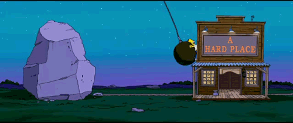

DevLog for Wonky's World

2020.07.20 - 2020.07.22
- Recieved New Hardware for Backup Box
- Assembled New Box - i3-9100F - Build Cost $400us
- Installed Ubuntu Studio LTS
- Studio Updated with Snaps Store Kinda Broke
- Shopping for a Distro without Snaps
- Downloading Multiple Distros to Test
- Gonna Try Pop!_OS Next
2020.07.19 - Took a day off to Sleep
2020.07.17 - 2020.07.18
- More Work on Website
- Noticed 404.page did not display images if 404 occured in subfolder
- Added base url tag in document heads
- Menu absolute links to relative links
- Adjusted image links in nested docs to work with base url
- Added link to google docs to download 3D 3rd person shooter demo
2020.07.16
- More Work on Website
- Organized File Structure
2020.07.14 - 2020.07.15
- More Work on Website
- Added 404.page
- Added new Menu
- Tweeked Formating & Colors
- Moved Development Progress from Godot Demo Page to this DevLog
2020.07.13 - Took a day off to Sleep
2020.07.09 - 2020.07.12
- Worked on Website
- Added Unity3D Demo from 2018 SGD Homework
- Too Many More Changes to Remember
- Check GitHub Profile (kinda what it's for.)
2020.07.09: Updates to Website
- Got a couple of pages going
- Did some formatting on the two pages.
- Threw some basic colors on the two pages.
2020.07.08: Installed Godot for first time.
- Downloaded the officially created Platformer 3D demo from their site.
- Tested the game in Godot game engine.
- Exported as WebGL/HTML5
- Created GitHub account and this site.
- Uploaded the WebGL demo to this site.
- Satisfied with results proceeded to test #2
- Exported 3D Mech animated 'chicken walker' from Blender.
- Imported 3D Mech into Godot.